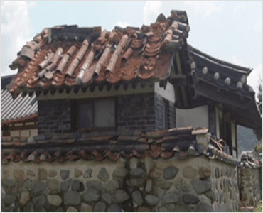
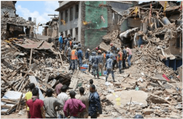
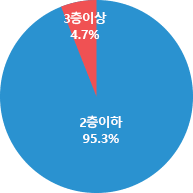

지진상식
지진에 위험한 주택
한옥 왜 지진에 위험할까요?
한옥에서 기와는 지붕 위에 놓여있고, 벽체는 벽돌 및 흙으로 만들어져 지진과 같이 옆으로 미는 힘에 약합니다. 9.12 지진 시 경주지역 전체 한옥의 10%인 1,202동의 한옥 건물에서 기와의 탈락(52%), 벽체의 균열 및 전도(24%) 등이 피해가 발생하였습니다.

벽돌집 왜 지진에 위험할까요?
벽돌을 쌓아 집을 지어올리는 형식은 지진과 같이 옆으로 미는 힘에 약합니다. 국외에서도 벽돌집의 지진피해가 많이 발생하였습니다.

페루 이카 지진 (2017)
인명피해 8,786명 / 건물피해 7,000여 동

중국 쓰촨성 지진 (2008)
인명피해 69,226명/건물피해 17,923명/건물피해 약 450만 동

네팔 지진 (2015)
인명피해 8,786명 / 건물피해 7,000여 동
내진설계 기준
우리나라는 1988년 건축물의 내진설계 기준이 마련된 이후 점차적으로 내진설계 의무대상 건축물이 확대되었지만, 저층주택에 대해서 내진설계를 의무적으로 실시할 법적 규제는 없다.

국내 전국 건축물 분포에서 한옥(19.2%)과 벽돌집(38.8%)이 반 이상을 차지하고, 그 중 80% 이상은 주택(주거용)으로 활용하고 있고, 95% 이상은 3층 미만의 저층 건축물로 지진발생 시 인명 피해 발생 우려가 있다.

<전국 건축물 구성비>

<한옥 및 벽독집 용도>

<한옥 및 벽돌집 층수>
따라서, 내진설계 및 보강이 되지 않은 저층주택(한옥 및 벽돌집 등)은 지진에 취약하다.